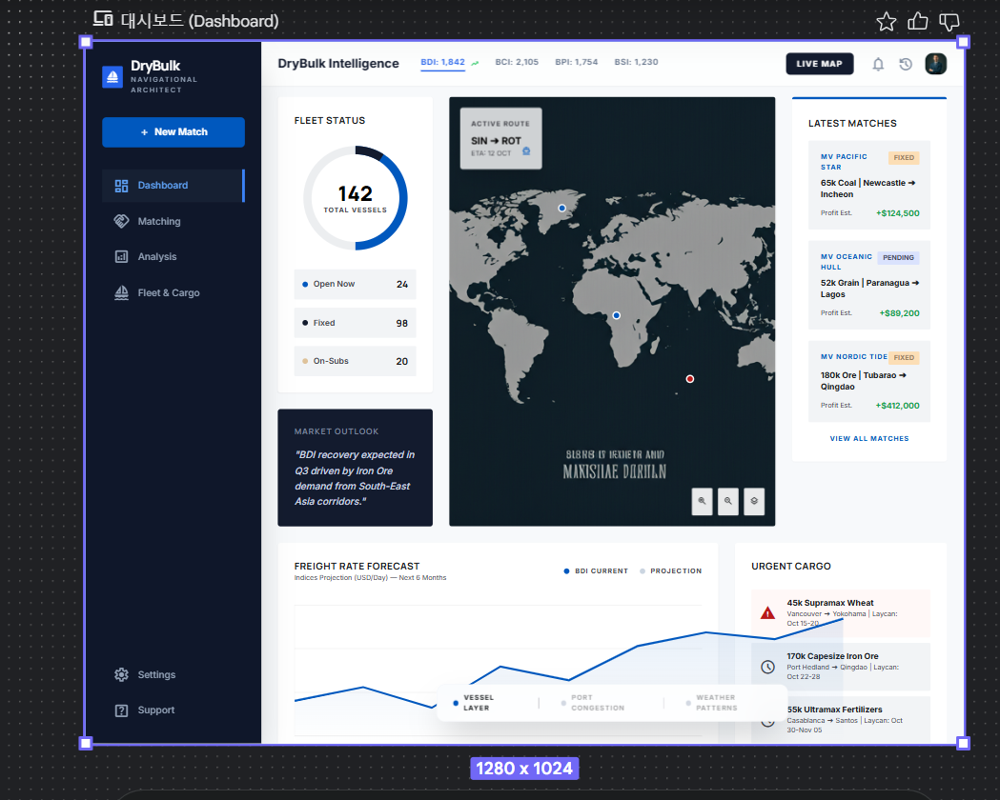
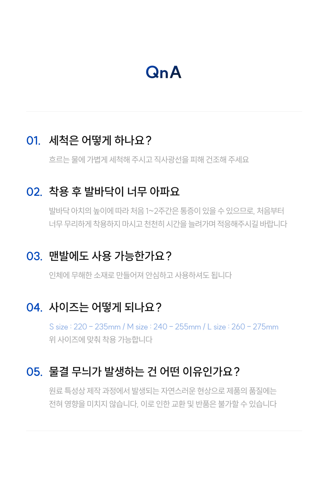
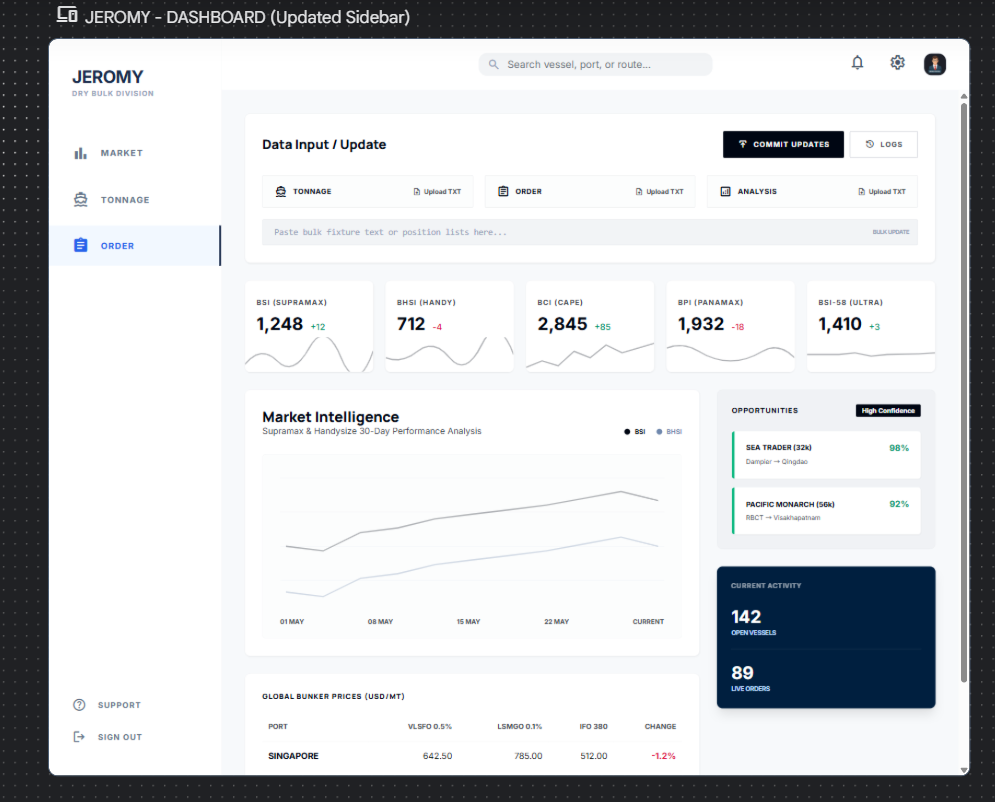

Writing-led Portfolio
블로그에서 시작해 작업과 통찰로 이어지는 사람
빠르게 과장하기보다 꾸준히 기록하고, 그 기록이 생각의 깊이와 결과물의 방향으로 이어지도록 만드는 방식을 좋아합니다.
Warm, steady, insightful
이정현
성실하고 따뜻하고 밝지만, 결국에는 구조를 읽고 핵심을 짚어내는 사람으로 보이고 싶습니다. 해운·물류 실무 경험을 바탕으로 기록, 분석, 제작을 천천히 쌓아왔고 그 흐름을 블로그와 결과물로 남기고 있습니다.
Writing-led Portfolio
빠르게 과장하기보다 꾸준히 기록하고, 그 기록이 생각의 깊이와 결과물의 방향으로 이어지도록 만드는 방식을 좋아합니다.

How I want to be seen
성실하고 따뜻하고 밝지만, 결국에는 한 번 더 생각해서 본질을 짚어내는 사람.
Writing First
저는 블로그를 단순한 기록장이 아니라, 배운 것을 내 것으로 만들기 위해 다시 쓰는 공간으로 사용하고 있습니다.
수업 과정에서 배운 내용, 시장을 바라보는 생각, 실습하면서 느낀 점, 일상에서 떠오른 아이디어를 꾸준히 남기며 저만의 속도로 축적하고 있습니다.
네이버 블로그 보러 가기Tone
기록은 저에게 공부의 흔적이자, 다음 작업으로 이어지는 아이디어 저장소입니다.
포트폴리오에서도 결과물보다 먼저, 그 결과물이 어디에서 왔는지 보이게 하고 싶습니다.
시황, 운임, 브로커 감각, 키워드 흐름처럼 현장에서 익힌 감각을 정리하고 다시 해석합니다.
글 읽으러 가기 Featured Post 02벤치마킹, 아카이빙, 프롬프트 테스트, 상세페이지 기획처럼 배운 것을 실제 작업 언어로 바꿔 적습니다.
글 읽으러 가기 Featured Post 03감사 일기, 관찰 메모, 작업 중간 생각을 남기며 결국에는 사람의 온도가 있는 기록으로 이어갑니다.
글 읽으러 가기About
저는 해운 중개 실무에서 JH Lee라는 이름으로 일해왔고, 시장 흐름과 정보의 구조를 읽는 일에 익숙합니다.
2026년 2월 23일부터 글로벌 AI 이커머스 전문가 과정을 따라가며 상세페이지 벤치마킹, 사이트 아카이빙, 프롬프트 실험, 쇼츠 제작, 대시보드 시안 작업까지 범위를 확장해왔습니다.
저의 강점은 배운 것을 기록으로 남기고, 기록을 분석으로 연결하고, 분석을 다시 실제 결과물로 만드는 데 있습니다. 성실함이 바탕이고, 그 위에 따뜻한 시선과 통찰을 더하고 싶습니다.
What I Do
Selected Works
Market Intelligence Platform
드라이벌크 시황과 운임 흐름을 더 직관적으로 읽고, 매칭과 시장 판단을 더 빠르게 할 수 있도록 구상한 플랫폼입니다. 운임·용선료·기회 화물을 대시보드 형태로 시각화하는 방향을 잡았습니다.

AI Application
해외 상품 URL을 바탕으로 정보를 수집하고, 분석·번역·구조화해 상세페이지 인사이트로 연결하는 앱입니다. AI와 이커머스 실무를 직접 연결하려는 시도였습니다.
Knowledge Workflow
복잡한 문서와 시황 자료를 더 빠르게 읽고 활용할 수 있도록 구성한 RAG 프로젝트입니다. 실무에서 필요한 탐색 효율과 질문 중심 워크플로우에 집중했습니다.
E-commerce Practice Archive
글로벌 상세페이지 벤치마킹, 트렌드 체크, 상세페이지 캡처, 쇼츠 영상 제작, 이미지 생성, 페이지 분석까지 이어진 실습 아카이브입니다. 리서치에서 끝나지 않고 실제 제작 결과물까지 연결했습니다.

Learning Journey
상세페이지 벤치마킹, 사이트 아카이빙, AI 프롬프트 테스트를 일 단위로 기록.
해운 시황, 클락슨, HMM, 글로비스 등 도메인 키워드와 AI 툴 학습을 연결.
RAG, CODEX, n8n, Stitch 기반 시안, 상세페이지 제작, 쇼츠 업로드로 확장.
Visual Archive

시장 흐름과 오더 관리를 더 읽기 쉽게 만드는 UI 방향을 실험했습니다.
구매 전환에 영향을 주는 구성 방식과 정보 배치를 계속 비교했습니다.

차트 선택, 프레젠테이션 설계, 리포트 설득력 강화 방식도 함께 훈련했습니다.
Writing & Channels
블로그가 생각의 출발점이라면, 유튜브는 실험과 실행의 흔적입니다. 맨발걷기, 건강, 짧은 콘텐츠 제작, AI 실습 결과를 보다 직관적인 형식으로 보여주고 있습니다.
생각과 학습의 흐름을 정리하고, 다음 작업으로 이어질 아이디어를 기록합니다.
YouTube맨발걷기와 건강 관련 실험형 콘텐츠, 작업 결과를 영상으로 남기고 있습니다.
YouTube주제 중심 콘텐츠와 프로젝트성 영상을 쌓아가는 채널입니다.
Instagram비주얼 결과물과 일상적인 작업 흔적을 가볍게 축적하는 공간입니다.
Threads짧은 관찰과 실험 메모, 생각의 중간 기록을 남기는 채널입니다.
GitHub포트폴리오와 함께 GitHub 프로필과 프로젝트 정리를 이제 실제로 이어갈 수 있습니다.
Contact & Next
지금의 포트폴리오는 완성본이라기보다, 제가 어떤 태도로 배우고 만들고 기록하는지 보여주는 현재진행형 아카이브에 가깝습니다.
블로그를 중심으로 생각을 쌓고, 유튜브와 소셜 채널로 실험 결과를 나누고, 앞으로는 GitHub까지 연결해 작업의 흐름을 더 또렷하게 정리해갈 예정입니다.